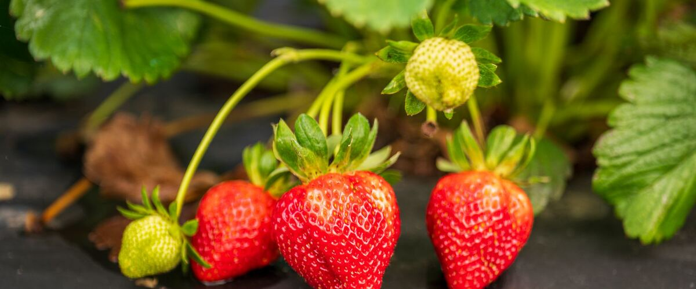

When to plant strawberries in Baker City, OR
Plant strawberry plants in Baker City Apr 27 – Jun 8.
- Difficulty
- Easy
- Sun
- Full sun
- Spacing
- 12 to 18 inches apart
- Planting depth
- Crown at soil level: not buried, roots covered
- Frost
- Hardy perennial; comes back every year
- First harvest
- A light crop the first summer; full crops from the second year
Why these dates
Baker City's typical last spring frost is May 25. As a hardy perennial, this crop can go in about 4 weeks before that.
High desert and mountains. Central and high eastern Oregon. Frost is possible almost any month. Use row covers, wall-o-water or cloches for warm crops, and choose short-season varieties.
How to grow strawberries in Baker City
- Pick a sunny spot with soil that drains well, and mix in an inch or two of compost.
- Plant strawberry plants Apr 27 – Jun 8, 12 to 18 inches apart. Crown at soil level: not buried, roots covered.
- Water regularly, mulch with straw, and pinch off runners in the first year so plants put energy into roots.
- Harvest: Pick fully red berries every couple of days, in the morning, with the cap attached.
Key numbers
- 5.5–6.5Soil pH
- Right at the soil surfaceCrown depth
- After harvestFeed June-bearers
- Above 85°FDay-neutrals slow
- Every 3–4 yearsReplace plants
- Gray mold at bloomBiggest risk
How it works
The plant biology behind the advice above, in plain language.
June-bearers, everbearers and day-neutrals
The kind of strawberry decides when you get fruit. June-bearing varieties, like Hood and Shuksan, form next year's flower buds in late summer and fall, when days shorten and nights cool, and they fruit once, in a big flush in early summer.
Day-neutral varieties, like Albion and Seascape, form flowers regardless of day length as long as temperatures are moderate, so they fruit from early summer into fall. They slow down in hot spells above about 85°F, which is rarely a problem near the coast or in Puget Sound. Everbearers fall in between, with a summer crop and a fall crop.
Soil and planting
Strawberries want well-drained soil with a pH of about 5.5 to 6.5 and plenty of compost. Raised rows help a lot in wet winters, since crowns rot in soggy ground. Avoid beds where tomatoes, potatoes, peppers or eggplant grew in the last few years, since they share Verticillium wilt, a soil fungus that also kills strawberries.
Planting depth matters more than with most plants. The crown, where the leaves meet the roots, has to sit right at the soil surface. Buried crowns rot, and exposed roots dry out.
Feeding and water
For June-bearers, the main feeding comes after harvest, because that's when the plant builds the buds for next year's crop. A lot of nitrogen in spring mostly grows leaves and soft fruit that's more prone to rot. Day-neutrals fruit all season, so give them small, regular feedings instead.
Keep the soil evenly moist, about an inch of water a week while plants flower and fruit, and water at the base in the morning so leaves and berries dry quickly.
Gray mold and other problems
Gray mold (Botrytis) is the main strawberry disease in the Northwest. It infects the flowers during wet weather at bloom, then sits quietly until the fruit ripens and turns to gray fuzz. Straw mulch to keep berries off the soil, spacing for airflow, picking often and removing moldy fruit right away all help.
Slugs eat ripe berries, root weevils notch leaf edges and their larvae feed on roots, and spotted wing drosophila can infest day-neutral berries in late summer. Picking ripe fruit promptly limits all three.
Keeping a bed productive
Strawberry plants are most productive in their second and third years, then decline as viruses and root diseases build up. Plan to replace them every three or four years with new, certified virus-free plants in a fresh spot rather than replanting runners from an old bed.
Renovate June-bearers right after harvest: cut the leaves off about an inch above the crowns, thin crowded plants, remove weeds, feed and water. The plants regrow clean foliage and build strong buds for next year.
Harvest
Strawberries stop ripening once picked, so harvest them fully red. Pick in the cool of the morning with the cap attached, refrigerate right away, and wash only just before eating. They keep a few days at most.
Common questions
When is the last frost in Baker City, OR?
Typically May 25. In 9 years out of 10, frost is over by June 16. These are 1991–2020 NOAA climate normals for Baker City Municipal Airport.
Is it too late to plant strawberries in Baker City?
The spring planting window runs through June 8. Potted plants can still go in later if you water them faithfully through their first summer.
How long until I can pick strawberries?
A light crop the first summer; full crops from the second year. Pick fully red berries every couple of days, in the morning, with the cap attached.
Why do my strawberries only fruit in June?
You probably have a June-bearing variety. They form flower buds as days shorten in late summer and fall, and fruit once the next spring. For berries into fall, add a day-neutral variety like Albion or Seascape.
Should I cut off strawberry runners?
In the first year, yes for June-bearers, so the plants build strong crowns. After that, let a few root to fill gaps and remove the rest. Day-neutral varieties make fewer runners, and pinching them keeps fruit coming.
How long do strawberry plants last?
Usually three to four good years. After that, yields drop as viruses and root diseases build up. Replace them with new certified plants, ideally in a different bed.
Why are my strawberries rotting before they ripen?
Gray mold, which infects the flowers in wet weather and shows up as the fruit ripens. Mulch with straw, space plants for airflow, water at the base in the morning, and pick and discard moldy berries promptly.
Also plant in Baker City around the same time
Planting dates for strawberries in nearby areas
- Pendleton, OR Apr 1 – May 13
- The Dalles, OR Apr 1 – May 13
- Hood River, OR Apr 1 – May 13
- Hermiston, OR Apr 1 – May 13
- Ontario, OR Apr 1 – May 13
- La Grande, OR Apr 15 – May 27
Full planting calendar for Baker City · Strawberries in every city